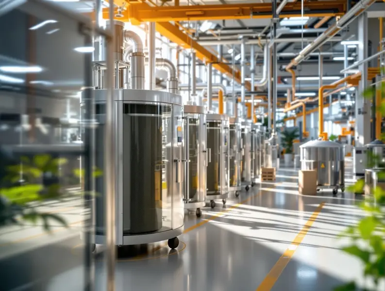

01
WI-FINE TECH
고객의 산업환경에 적합한 활성탄

활성탄은 미세한 세공구조와 넓은 표면적을 이용하여 기체 및 액체 속의 다양한 물질을 흡착하는 소재입니다. WIFINETECH은 원료의 특성과 사용 목적을 고려하여 고객의 산업환경에 적합한 활성탄을 제조·공급합니다.
원료 선정부터 활성화, 입도 관리, 품질검사에 이르는 제조공정을 체계적으로 관리하여 안정적인 흡착성능과 균일한 품질을 확보하고 있습니다.
WI-FINE TECH
주요 관리 항목
WI-FINE TECH
주요 적용 분야
- 01
AIR
산업용 배기가스 · VOCs · 악취 · 유해가스 제거
- 02
WATER
정수 · 폐수 · 공업용수 처리 및 유기물 제거
- 03
INDUSTRY
화학공정 · 환경설비 · 각종 산업용 정제 및 흡착공정
WI-FINE TECH
활성탄 제품 전체

입상활성탄
야자각, 석탄, 목재 등의 원료를 활성화한 후 일정한 입도로 제조한 입자 형태의 활성탄입니다. 우수한 흡착성능과 취급성을 갖추고 있어 공기정화, VOC 제거, 악취 제거 및 수처리 등 다양한 분야에 폭넓게 적용할 수 있습니다.
규격·상세 내용 보기
공급 규격
- 4×8 / 8×16 / 8×30 / 12×30 / 12×40 / 20×40 mesh 등
- 제품 및 적용조건에 따라 다양한 규격 공급 가능
제품 특성
- 우수한 흡착성능
- 다양한 입도 선택 가능
- 높은 범용성
- 기상 및 액상 처리에 적용 가능
- 고정층 흡착설비 적용에 용이
적용 분야
- VOC 제거
- 악취 제거
- 공기정화
- 정수·폐수처리
- 공정가스 정제

분말활성탄
활성탄을 미세한 분말 형태로 제조하여 접촉면적과 흡착속도를 높인 제품입니다. 주로 처리 대상 유체에 직접 투입하여 오염물질을 흡착한 후 침전 또는 여과공정을 통해 제거하는 방식으로 사용되며, 정수·폐수처리 및 탈색·정제 분야에 적합합니다.
규격·상세 내용 보기
공급 규격
- 50×200 / 80×325 / -325 mesh 등
- 용도에 따라 입도 및 흡착성능 선택 가능
제품 특성
- 빠른 흡착속도
- 높은 접촉효율
- 투입량 조절이 용이
- 색도·냄새·유기물 제거에 효과적
적용 분야
- 정수처리
- 폐수처리
- 탈색
- 식품·음료
- 화학제품 정제

조립(압출)활성탄
활성탄 원료를 일정한 직경의 원통형으로 성형하여 제조한 활성탄입니다. 균일한 형상으로 공기의 흐름을 안정적으로 유지할 수 있으며, 높은 기계적 강도와 상대적으로 낮은 압력손실 및 분진 발생 특성으로 인해 산업용 에어필터와 가스처리 분야에 적합합니다.
규격·상세 내용 보기
공급 규격
- Ø0.8 / 1.5 / 2 / 3 / 4 mm 등
- 사용조건 및 필터 설계에 따라 규격 선정
제품 특성
- 균일한 원통형 구조
- 우수한 기계적 강도
- 낮은 압력손실
- 낮은 분진 발생
- 가스상 오염물질 처리에 적합
적용 분야
- 산업용 에어필터
- VOC 제거
- 악취 제거
- 용제 회수
- 공정가스 정제
CONTACT WI-FINE TECH
상담문의 ↗필요한 제품과 조건을 알려주세요.
사용 환경과 요구 성능을 함께 검토하여 적합한 제품과 공정을 제안합니다.